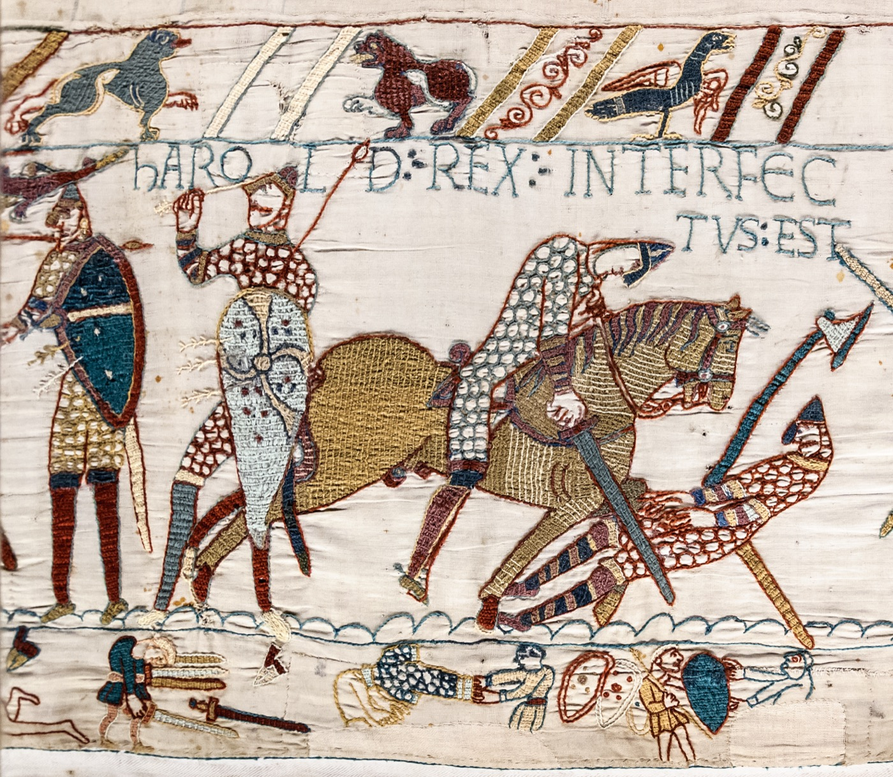
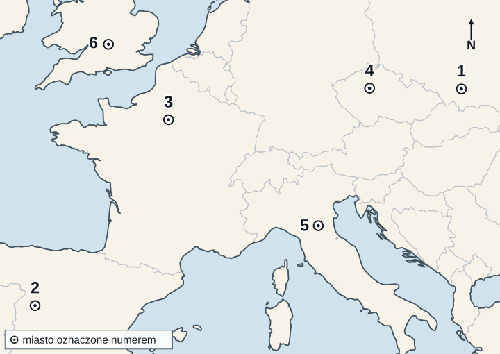

KOD UCZNIA:
Materiał autorski do ćwiczeń, opracowany na podstawie regulaminu szczegółowego oraz archiwalnych arkuszy etapu szkolnego Kujawsko-Pomorskiego Kuratora Oświaty z lat 2018/2019–2025/2026. Nie jest oficjalnym arkuszem konkursowym żadnego z kuratoriów.
Oceń prawdziwość zdań dotyczących Pompejów. Wpisz P (prawda) albo F (fałsz).
| 1. Pompeje zostały zniszczone przez wybuch Wezuwiusza w I w. n.e. | |
| 2. Miasto zalała lawa, która doszczętnie przetopiła jego mury i budynki. | |
| 3. W czasie erupcji zginął rzymski uczony i dowódca floty Pliniusz Starszy, autor „Historii naturalnej”. | |
| 4. Dzięki zasypaniu miasta zachowały się w nim malowidła ścienne, mozaiki i napisy na murach domów. | |
| 5. Pierwsze wykopaliska archeologiczne w Pompejach rozpoczęto dopiero w XX w. | |
| 6. W chwili katastrofy Pompeje były miastem rzymskiej prowincji Galii. |
„Ani jednak pomoc ludzka, ani szczodrość władcy, ani przebłagiwanie bogów nie mogły usunąć hańbiącej pogłoski, że pożar wzniecono na rozkaz. Aby więc zdławić tę pogłoskę, [...] podstawił winowajców i ukarał najbardziej wyszukanymi karami tych, których — znienawidzonych za ich występki — lud nazywał [...]. Twórca tej nazwy, Chrystus, za panowania Tyberiusza został skazany na śmierć przez prokuratora Poncjusza Piłata.”
Tacyt, Roczniki (Annales) XV, 44 — fragment, przekład własny z łaciny; pominięcia oznaczono [...].
Na podstawie tekstu i własnej wiedzy wykonaj polecenia.
1. Podaj imię cesarza, o którym mowa w tekście.
2. Podaj, jakie wydarzenie z 64 r. n.e. opisuje autor.
3. Podaj, jak lud nazywał ukaranych.
4. Wyjaśnij na podstawie tekstu, dlaczego cesarz obarczył winą tę grupę.
Wybierz jedną poprawną odpowiedź. Wpisz jej literę.
1. Hunowie przybyli do Europy z:
2. W 451 r. Rzymianie wraz z Wizygotami pod wodzą Aecjusza powstrzymali Attylę w bitwie:
3. W 452 r. Attyla, który najechał Italię, zawrócił po rozmowach z:
Uzupełnij tekst. W każdą lukę wpisz właściwe określenie.
W 955 r. król niemiecki Otton I pokonał koczowniczy lud (1), który od kilkudziesięciu lat łupił ziemie Europy Zachodniej. Bitwę stoczono nad rzeką Lech w pobliżu Augsburga i nazwano ją bitwą na (2). Kilka lat później, w (3) r., Otton I został koronowany na cesarza w (4), odnawiając godność cesarską na Zachodzie. Państwo, na którego czele stanęli jego następcy, nazwano później (5) (podaj pełną nazwę).
Obejrzyj fragment zabytku i wykonaj polecenia.

Tkanina z Bayeux, scena 57, XI w., Musée de la Tapisserie de Bayeux; fot. Myrabella, domena publiczna (Wikimedia Commons).
1. Odczytaj z łacińskiego napisu imię i tytuł władcy, którego śmierć przedstawiono.
2. Podaj nazwę bitwy przedstawionej w tej scenie.
3. Podaj rok tej bitwy.
4. Podaj imię i przydomek zwycięzcy bitwy.
5. Podaj, jaką techniką wykonano ten zabytek (czym różni się od obrazu malowanego).
6. Tkanina powstała najpewniej kilka–kilkanaście lat po bitwie, prawdopodobnie na zamówienie biskupa Odona z Bayeux, przyrodniego brata zwycięzcy. Wyjaśnij, dlaczego z tego powodu trzeba ostrożnie korzystać z niej jako ze źródła do dziejów konfliktu.
Do każdego opisu dopasuj właściwe hasło. Wpisz litery A–F. Jedno hasło jest zbędne.
| 1. Lekarz i filozof, autor „Kanonu medycyny” — podręcznika, z którego korzystano na uniwersytetach europejskich przez kilka stuleci. | |
| 2. Matematyk, od którego przydomka pochodzi słowo „algorytm”, a od tytułu jego dzieła — słowo „algebra”. | |
| 3. Pałac i twierdza władców muzułmańskich w Grenadzie, słynąca z bogatych dekoracji ornamentalnych (arabesek). | |
| 4. Stolica kalifatu Abbasydów, w której działał „Dom Mądrości” — ośrodek tłumaczenia dzieł greckich uczonych na język arabski. | |
| 5. Filozof z Kordoby, komentator dzieł Arystotelesa, którego prace wpłynęły na średniowieczną filozofię chrześcijańską. |
W 1109 r. król niemiecki najechał Śląsk. Żądał od księcia polskiego, by przyjął z powrotem wygnanego brata i oddał mu we władanie część kraju. Obrońcy grodu nad Odrą, prosząc o rozejm, wydali najeźdźcy zakładników — także dzieci. Gdy mimo to nie zgodzili się poddać, król kazał przywiązać zakładników do machin oblężniczych, sądząc, że obrońcy nie odważą się do nich strzelać. Obrońcy jednak nie ustąpili i gród się obronił.
Opis na podstawie średniowiecznej kroniki, tekst streszczony i uwspółcześniony.
Na podstawie tekstu i własnej wiedzy wykonaj polecenia.
1. Podaj imię i numer króla niemieckiego, który najechał Polskę.
2. Podaj imię i przydomek księcia polskiego, przeciw któremu skierowany był najazd.
3. Podaj imię wygnanego brata tego księcia.
4. Podaj nazwę obleganego grodu nad Odrą.
5. Podaj, jak nazywamy autora kroniki opisującej te wydarzenia, oraz w jakim języku ją napisał.
Na mapie oznaczono numerami sześć miast, w których w średniowieczu powstały uniwersytety. Do każdego opisu dopasuj numer miasta z mapy.

Mapa bazowa: Natural Earth 1:50 mln, domena publiczna (CC0), Wikimedia Commons; oznaczenia i opracowanie zadania: własne.
| A. Uczelnia uważana za najstarszą w Europie (tradycyjnie 1088 r.), słynąca ze studiów nad prawem rzymskim. | |
| B. Uniwersytet w stolicy Francji, słynący z teologii; jedno z jego kolegiów, założone w XIII w. przez Roberta de Sorbon, dało później nazwę całej uczelni. | |
| C. Najstarszy uniwersytet w Anglii, działający od XII w. | |
| D. Najstarszy uniwersytet w Europie Środkowej, założony w 1348 r. przez Karola IV Luksemburskiego. | |
| E. Uczelnia założona w 1364 r. przez Kazimierza Wielkiego i odnowiona w 1400 r. przez Władysława Jagiełłę. | |
| F. Uniwersytet założony w 1218 r. przez Alfonsa IX, króla Leónu, jeden z najważniejszych ośrodków nauki na Półwyspie Iberyjskim. |
Oceń prawdziwość zdań. Wpisz P (prawda) albo F (fałsz).
| 1. W 1320 r. Władysław Łokietek koronował się na króla Polski w katedrze na Wawelu — jako pierwszy władca koronowany w Krakowie. | |
| 2. Koronacji Łokietka dokonał osobiście papież w Rzymie. | |
| 3. Za panowania Łokietka Krzyżacy opanowali Gdańsk (1308 r.) i całe Pomorze Gdańskie. | |
| 4. Wyrok sądu papieskiego z 1321 r. sprawił, że Krzyżacy zwrócili Łokietkowi Pomorze Gdańskie. | |
| 5. W 1331 r. pod Płowcami wojska Łokietka stoczyły bitwę z Krzyżakami, którzy najechali Kujawy i Wielkopolskę. | |
| 6. Synem i następcą Władysława Łokietka był Kazimierz Wielki. |
Zerwanie Henryka VIII z papiestwem w 1534 r. Określ, czy podana informacja jest przyczyną (wpisz P), czy skutkiem (wpisz S) tego wydarzenia.
| 1. Papież odmówił unieważnienia małżeństwa Henryka VIII z Katarzyną Aragońską. | |
| 2. Parlament uchwalił akt supremacji, uznający króla za najwyższą głowę Kościoła w Anglii. | |
| 3. Klasztory zostały skasowane, a ich majątki przejęła Korona. | |
| 4. Król pragnął mieć syna — następcę tronu, a jego żona nie urodziła mu męskiego potomka. | |
| 5. Stracono kanclerza Tomasza More’a, który odmówił uznania króla za głowę Kościoła. |
Uzupełnij tabelę. Dla każdej bitwy wpisz literę przeciwnika strony polskiej (A–E; jedna litera może się powtórzyć, jedna jest zbędna) oraz wynik dla strony polskiej: Z (zwycięstwo) albo K (klęska). Za każdy w pełni poprawny wiersz — 1 p.
| Bitwa | Przeciwnik (A–E) | Wynik (Z/K) |
|---|---|---|
| 1. Orsza (1514) | ||
| 2. Cecora (1620) | ||
| 3. Beresteczko (1651) | ||
| 4. Warna (1444) | ||
| 5. Obertyn (1531) |
Uzupełnij tekst. W każdą lukę wpisz właściwe określenie.
Pierwszą stałą osadą angielską w Ameryce Północnej było założone w 1607 r. w Wirginii (1). W 1620 r. na statku (2) przypłynęła grupa purytanów, szukających swobody wyznania; nazwano ich później (3). Holendrzy założyli na wyspie Manhattan osadę (4), którą w 1664 r. przejęli Anglicy i przemianowali na Nowy Jork. Kolonię (5) założył w 1681 r. kwakier William Penn.
Uzupełnij tekst. W każdą lukę wpisz właściwe określenie.
Na przełomie XVI i XVII w. w państwie moskiewskim panował okres zamętu i walk o tron, zwany Wielką (1). Wykorzystali to polscy magnaci, popierając w 1604 r. samozwańca (2), który podawał się za syna cara Iwana IV Groźnego. Jego żoną i carycą została córka wojewody sandomierskiego, (3) [imię i nazwisko]. W 1610 r. hetman (4) [imię i nazwisko] pokonał wojska moskiewsko-szwedzkie pod Kłuszynem, po czym bojarzy obrali carem królewicza (5) [imię], syna Zygmunta III Wazy. W 1611 r., po blisko dwuletnim oblężeniu, wojska polskie zdobyły twierdzę (6).
Rozwiąż krzyżówkę. Litery w zaznaczonych polach, czytane z góry na dół, utworzą hasło. Wpisz hasło i wyjaśnij jego znaczenie.
| 1. | |||||||||||||||
| 2. | |||||||||||||||
| 3. | |||||||||||||||
| 4. | |||||||||||||||
| 5. | |||||||||||||||
| 6. |
| 1. Zgromadzenie trzech stanów sejmujących — króla, senatu i izby poselskiej; najwyższy organ ustawodawczy Rzeczypospolitej. |
| 2. Najwyższy sąd apelacyjny dla szlachty, ustanowiony dla Korony za panowania Stefana Batorego. |
| 3. Urzędnik kierujący kancelarią królewską i strzegący pieczęci państwowej; urząd ten pełnił m.in. Jan Zamoyski. |
| 4. Urzędnik królewski zarządzający dobrami królewskimi (królewszczyznami) i sprawujący sądy w grodzie. |
| 5. Uchwała sejmu w dawnej Rzeczypospolitej; tym słowem nazwano też ustawę uchwaloną 3 maja 1791 r. |
| 6. Urzędnik ziemski, pierwotnie zarządca grodu, od XVI w. zasiadający w senacie (niżej od wojewody). |
Hasło:
Wyjaśnienie hasła:
Uzupełnij tekst. W każdą lukę wpisz właściwe określenie.
Władysław IV, syn (1) [imię i numer], został obrany królem w 1632 r. Zaraz potem wybuchła wojna z państwem moskiewskim o ziemie utracone w poprzedniej wojnie, nazwana od oblężonej twierdzy wojną (2). Zakończył ją w 1634 r. pokój zawarty w (3), w którym Władysław zrzekł się tytułu (4). W 1635 r. rozejmem w (5) przedłużono rozejm ze Szwecją. Król był zwolennikiem pokoju religijnego — w 1645 r. zwołał do (6) rozmowy katolików z protestantami, zwane colloquium charitativum. W 1644 r. przed Zamkiem Królewskim w Warszawie wzniesiono z jego fundacji pomnik ojca w formie (7).
Uzupełnij tekst. W każdą lukę wpisz właściwe określenie.
W 1658 r. hetman kozacki (1) [imię i nazwisko] zawarł z Rzecząpospolitą ugodę w (2). Przewidywała ona utworzenie z województw kijowskiego, bracławskiego i czernihowskiego (3), które miało stać się trzecim, równorzędnym członem państwa obok Korony i Wielkiego Księstwa Litewskiego. Rzeczpospolita Obojga Narodów miała się więc przekształcić w Rzeczpospolitą (4). Ugoda nie weszła w życie, a na mocy rozejmu zawartego w 1667 r. w (5) ziemie na lewym brzegu Dniepru przypadły Rosji.
Wybierz jedną poprawną odpowiedź. Wpisz jej literę.
1. W 1704 r. Stanisław Leszczyński został obrany królem Polski dzięki poparciu:
2. Po klęsce Szwedów pod Połtawą (1709) na tron polski powrócił:
3. Ponowny wybór Leszczyńskiego w 1733 r. wywołał wojnę o sukcesję polską, w której Rosja poparła kandydaturę:
4. Po zakończeniu wojny Leszczyński otrzymał dożywotnio księstwo:
Uzupełnij tekst. W każdą lukę wpisz właściwe określenie.
Stanisław Konarski (1700–1773) był członkiem zakonu (1). Zasłynął jako reformator szkolnictwa — w 1740 r. założył w Warszawie szkołę dla synów szlacheckich i magnackich, zwaną (2). Wcześniej opracował i wydał pierwsze tomy zbioru praw Rzeczypospolitej, zwanego po łacinie (3), którego inicjatorem był biskup Józef Andrzej (4) — ten sam, który wraz z bratem otworzył w 1747 r. w Warszawie jedną z pierwszych w Europie bibliotek publicznych. W dziele „O skutecznym rad sposobie” Konarski dowodził szkodliwości zasady (5) (nazwa łacińska), pozwalającej jednemu posłowi zerwać sejm. Kontynuacją jego dzieła była powołana w 1773 r. (6).
Uporządkuj wydarzenia chronologicznie. Wpisz cyfry od 1 (najwcześniejsze) do 6 (najpóźniejsze).
| A. Tumult toruński i wyrok na władze protestanckiego Torunia. | |
| B. Unia brzeska — powstanie Kościoła unickiego (greckokatolickiego). | |
| C. Bitwa pod Legnicą z Mongołami i śmierć Henryka Pobożnego. | |
| D. Traktaty welawsko-bydgoskie — zniesienie zależności lennej Prus Książęcych od Polski. | |
| E. Pokój kaliski z zakonem krzyżackim. | |
| F. Wydanie drukiem statutu Jana Łaskiego — zbioru praw Królestwa Polskiego. |
Punktacja: 4 p. – wszystkie wydarzenia na właściwych miejscach; 3 p. – cztery; 2 p. – trzy; 1 p. – dwa; 0 p. – mniej.
Kod ucznia:
| Zadanie | Odpowiedzi | Punkty |
|---|---|---|
| I. Pompeje | 1 …… 2 …… 3 …… 4 …… 5 …… 6 …… | |
| II. Rzym w relacji Tacyta | ||
| III. Hunowie i Attyla | 1 …… 2 …… 3 …… | |
| IV. Otton I | ||
| V. Tkanina z Bayeux | ||
| VI. Nauka świata islamu | 1 …… 2 …… 3 …… 4 …… 5 …… | |
| VII. Obrona grodu 1109 | ||
| VIII. Uniwersytety | A …… B …… C …… D …… E …… F …… | |
| IX. Władysław Łokietek | 1 …… 2 …… 3 …… 4 …… 5 …… 6 …… | |
| X. Reformacja w Anglii | 1 …… 2 …… 3 …… 4 …… 5 …… | |
| XI. Bitwy | 1 …… 2 …… 3 …… 4 …… 5 …… | |
| XII. Kolonie angielskie | ||
| XIII. Dymitriady | ||
| XIV. Krzyżówka | ||
| XV. Władysław IV | ||
| XVI. Ugoda hadziacka | ||
| XVII. Stanisław Leszczyński | 1 …… 2 …… 3 …… 4 …… | |
| XVIII. Stanisław Konarski | ||
| XIX. Chronologia | A …… B …… C …… D …… E …… F …… | |
| Razem | / 100 |